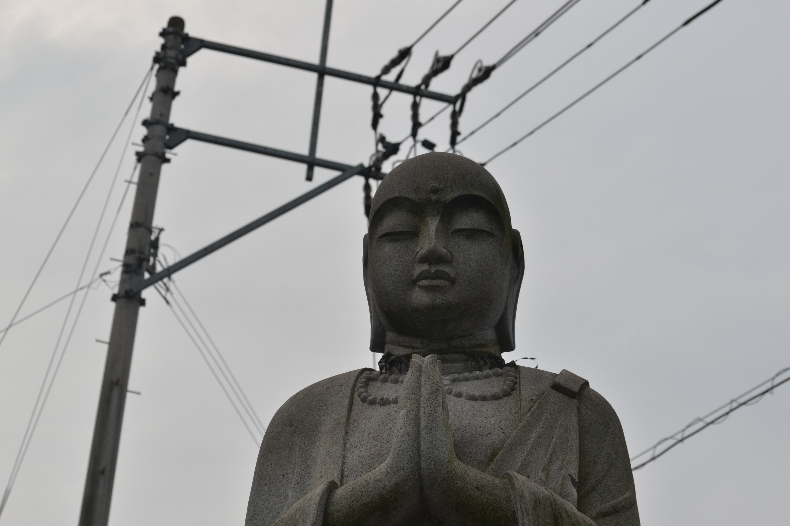
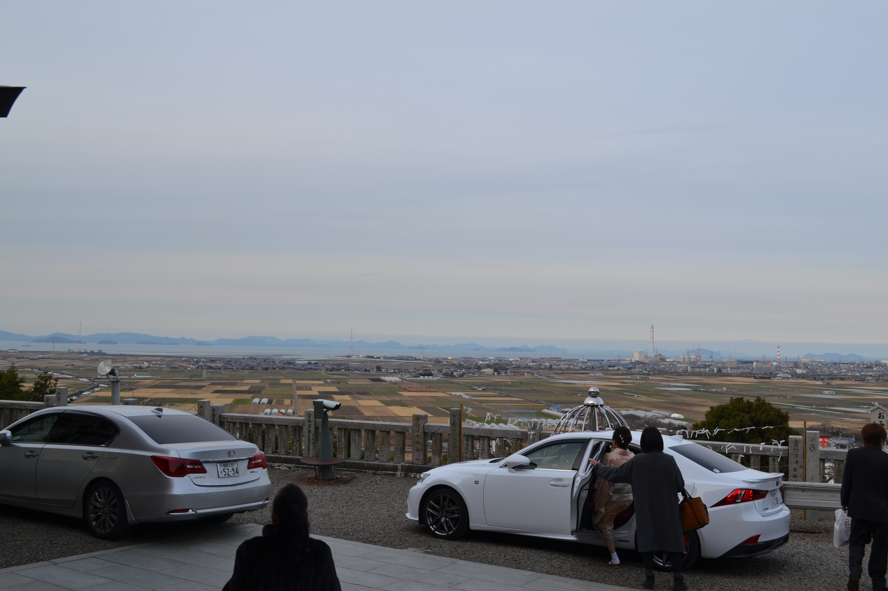

フナムシ名刺
Photography
The following images were taken between the years 2017 and 2020, mostly in Ehime, Japan.
Clicking the thumbnails will allow you to view the images in full fidelity.

Sleeping person, early morning at Kansai International Airport.

Moodily illuminated torii, nearly dusk at Ikku Shrine. Niihama City, Ehime Prefecture.

At Ikku Shrine: an offering cup (for sake?) and a dead bug. Alcohol poisoning?

Cute juxtaposition. Taken on the observation deck of KIX (probably).

The entryway to Ikku Shrine. This torii is huge.

In the hallway/balcony outside my apartment.

View of Niihama from my apartment.

Fortunes hung from a tree at Ikku Shrine.

View of the southern mountains from Ikku Shrine.

Friendly cat, somewhere around Niihama.

My friend Etsuya, posing by the Shimanto River.

Statue of a stern pilgrim at a temple in Ehime.

Strange dogs in a shabby old ryokan in Ise City, Mie Prefecture.

Traffic Safety Big Boy in Saijo City, Ehime Prefecture.

A dumping ground for votive objects that have exhausted their usefulness (Saijo City).

Triumphant hikers taking photos of Mount Ishizuchi's iconic, tengu-shaped summit.

An apartment building towering over a rural neighborhood in Saijo... inaka doomer aesthetic.

This monk is probably praying to Lain. Found at a temple in Niihama.

View of Saijo (and the Seto Inland Sea) from Ishizuchi Shrine.

Local train heading eastbound through Niihama on the JR Shikoku Iyo Line.

View of Matsuyama City, capital of Ehime Prefecture, from the Matsuyama Castle keep.

Streetcar bound for Gomen Station, Kochi City, Kochi Prefecture. "Gomen" means "sorry" in Japanese, but I don't think this cute Anpanman car needs to apologize for anything.

Hazy Saijo, from the Saijo Archaeological Museum in the hills south of the city.

The Eguchi neighborhood team parading their taiko drum float through the city during the Niihama Autumn Festival.